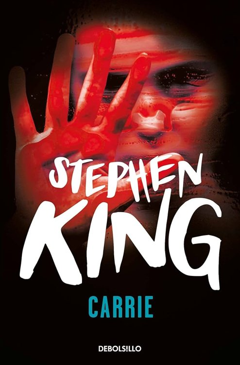

|
 |
Carriepor Stephen King SINOPSISUn clásico moderno, Carrie introdujo una nueva voz distintiva en la ficción estadounidense: Stephen King. La historia de la incomprendida chica de secundaria Carrie White, sus extraordinarios poderes telequinéticos y su violenta venganza, sigue siendo una de las novelas más rompedoras e impactantes de todos los tiempos. |
8/10
Horror, Fantasía, Paranormal, Clásico